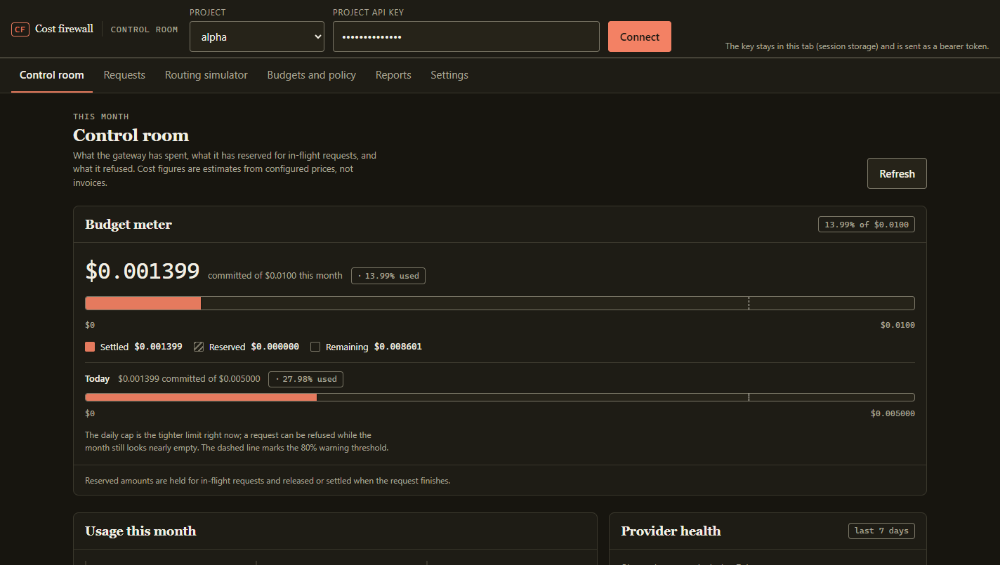

Atomic by construction
One writer, one transaction. Two processes cannot both observe the same headroom, and a refusal creates no attempt row.
OpenAI-compatible · Self-hosted · MIT
An OpenAI-compatible gateway that reserves each request's worst-case cost in SQLite before forwarding, settles at the provider-reported usage, and refuses the request that would cross the line.
No account, no SDK, no spend: the default config runs on deterministic fake providers.

One request, four commitments
Every chat completion passes the same sequence. A request that cannot reserve its worst-case cost never leaves the process.
A bearer key maps to one project: its allowlist, rate limit, concurrency cap, and budget policy.
Input tokens plus max_tokens priced at the route's rates, then
checked against the per-request, daily, and monthly limits inside one
BEGIN IMMEDIATE transaction.
Ordered targets are tried only for idempotent requests whose failure is
classified transient. A permanent 4xx stops at the first
attempt.
The reservation settles at reported usage, or at zero when the provider failed. Every attempt keeps its tokens, latency, cost, and outcome.
What you get
One writer, one transaction. Two processes cannot both observe the same headroom, and a refusal creates no attempt row.
Per-request ceilings, a daily cap, and a monthly cap. The dashboard names the cap that is currently refusing traffic.
Connection errors, timeouts, 408, 429, and
5xx can move to the next target. Malformed bodies and other
4xx do not.
Secret-shaped strings never reach the log. Redacting prompts before forwarding is opt-in, because it changes what the model sees.
SQLite ledger, per-request trace, Prometheus metrics, and CSV or JSON exports. Costs are estimates; the arithmetic is auditable.
Budget meter, request ledger, routing simulator, and read-only policy. Served by the gateway itself: no build step, no second service.
Tradeoffs, stated
The safety property should be easy to audit. There is no queue, no cache, no sidecar, and no build pipeline between the budget check and the provider call.
BEGIN IMMEDIATE, not on coordination between services.
stream: true is a
documented 400, not a request that quietly buffers.
Quickstart
Python 3.12. No provider credentials, no network, no spend. The dashboard is served by the same process.
Connect at http://127.0.0.1:8787/dashboard/ with the demo key
demo-key-alpha, then watch the first two requests fall back from
fake-primary to fake-backup.
# Windows: .venv\Scripts\python
python -m venv .venv
.venv/bin/python -m pip install -e ".[dev]"
.venv/bin/python -m cost_firewall.cli serve --config config.example.toml
# health, models, and one completion
curl -s http://127.0.0.1:8787/healthz
curl -s -H "Authorization: Bearer demo-key-alpha" \
http://127.0.0.1:8787/v1/modelsWhat it will not do
POST /v1/chat/completions. No tool-call retries
and no side-effecting requests.